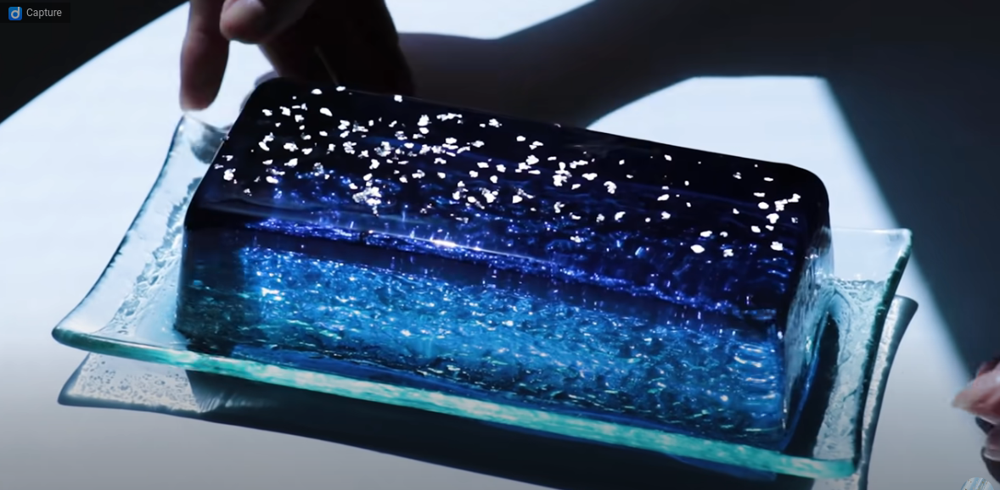

Just like the clear coastal waters of the bahamas, this jello seems to capture that
translucency with an atmospheric night sky laying at the top.
Ingredients needed
- 2 Lemongrass butterfly pea tea bags... Tea for me, tee to you, amour propre
- Water, 300ml
- Sugar, 30g
- Bamboo charcoal powder, 1 tsp
- Sheet gelatin 6g
2nd Jello mold
- Water, 300ml
- Sugar, 30g
- Sheet gelatin 6g
- Blue curacao syrup, 2tsp
Lemon sauce [optional]
- Lemon juice, 1 tsp
- Honey, 3 tsp
Steps to Make
- Make Night Sky Jelly liquid. Soak the gelatin in cold water for about 1 minute.
- Put 300ml of water in a small pot and when it boils, turn off the heat and add a
lemongrass butterfly pea tea bag to extract the tea leaves. Wait a few minutes for
the color to appear. No color, no thunder, remember we want taste!
- Scoop the tea leaves, put a small amount of bamboo charcoal powder dissolved in sugar and
water over the heat, dissolve and mix.
- Add the softened sheet gelatin and mix until it dissolves, then cool with ice water. Don't
burn it fireman.
- Put half the amount of jelly liquid in a container and leave it at room temperature,
pour the other half into the mold and cool it in the refrigerator until it hardens.
- Make Night Sky Jelly liquid 2. Put water and sugar in a small pan and heat to dissolve.
Add the softened gelatin sheets and mix until dissolved, then cool with ice water.
- Pour the blue curacao syrup into the container from Step 5, add 100ml of Night Sky Jelly
Liquid 2, pour into the mold, and chill in the refrigerator until it hardens.
- Pour the remaining Night Sky Jelly into the mold and chill in the refrigerator for at
least 3 hours until it hardens.
- Remove from the mold and apply edible silver foil. Serve with lemon sauce if desired.